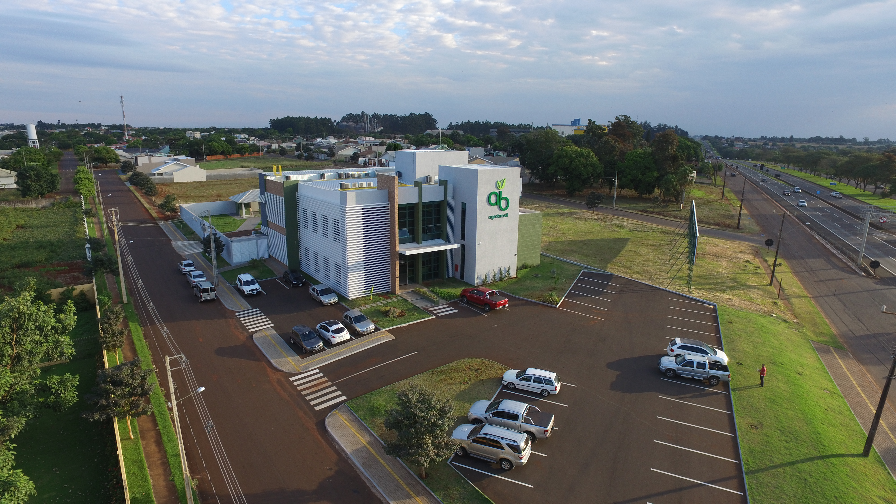
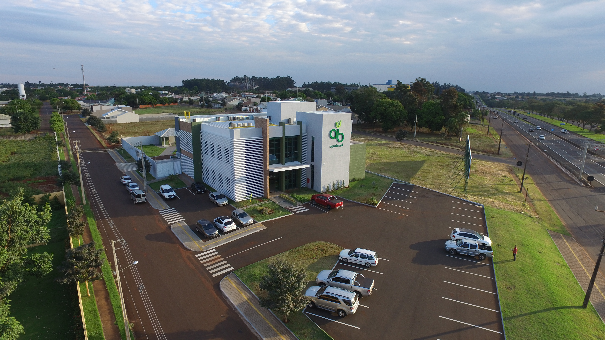
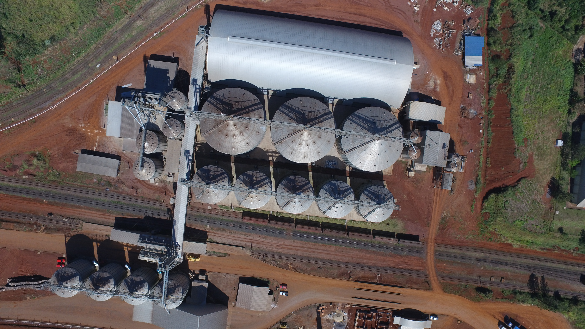
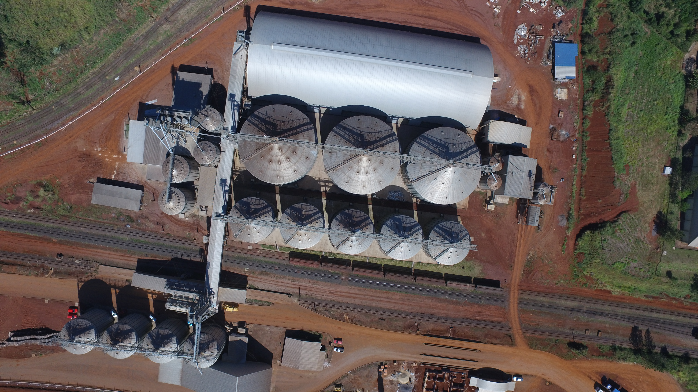

Quem somos?
Fundada em 1989 a AB AGROBRASIL está diretamente ligada ao segmento do agronegócio,
fornecendo tanto para o mercado nacional como internacional, a AB AGROBRASIL busca usar os conhecimentos
e experiência de sua equipe na satisfação de seus clientes, auxiliando na conquista de novos recordes
de produtividade e eficiência de seus produtos e serviços.
Com a experiência de quem tem vinte anos de atuação no mercado de cereais e insumos agrícolas,
a AB AGROBRASIL tornou-se uma empresa segura, bem conceituada e moderna em sua gestão, que busca agregar
novas ideias e valores para nossos clientes, parceiros e colaboradores.
Nossas Unidades
Com sede em Santa Terezinha de Itaipu, a AB AGROBRASIL possui unidades de recebimento, armazenagem e escritórios para comercialização de insumos agrícolas, situadas estrategicamente nos municípios de Santa Terezinha de Itaipu, São Miguel do Iguaçu, Missal, Santa Helena, Entre Rios do Oeste, Marechal Cândido Rondon e está em fase de construção sua mais nova unidade situada dentro do Terminal Ferroviário de Cascavel - FERROESTE, alcançando uma grande área de atuação em todo extremo oeste paranaense.

 

 


Contato
Telefone: 3541-1352
E-mail: abagrobrasil@abagrobrasil.com.br
Horário de Atendimento:
Segunda a Sexta: 08:00 às 12:00 e 13:30 às 18:00
Sábado: 08:00 às 12:00
Endereço: Rua Três de Maio, 2125 - Santa Terezinha de Itaipu - Paraná